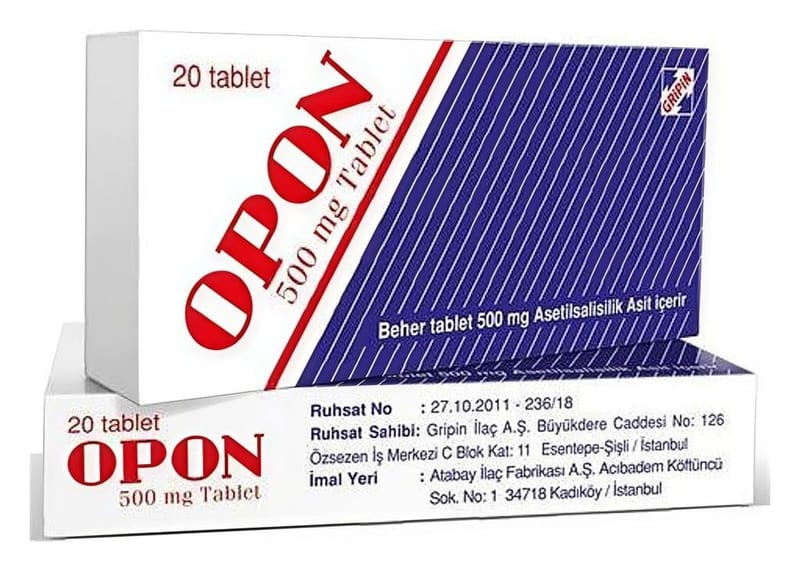

Opon 500 mg Tablet, 20 Tablet

Ne için kullanılır
KT · Bölüm 1 OPON, bir yüzü OPON, bir yüzü NA baskılı, beyaz, yuvarlak tablettir. OPON, asetilsalisilik asit adlı etkin maddeyi içeren, hafif-orta şiddetteki ağrılar ve ateş durumunda kullanılan bir ilaçtır. Her tablet etkin madde olarak 500 mg asetilsalisilik asit içerir. OPON, 20 tabletlik ambalajlarda sunulur. Çocuk ve adolesanlar için “OPON’u aşağıdaki durumlarda DİKKATLİ KULLANINIZ” bölümüne bakınız.